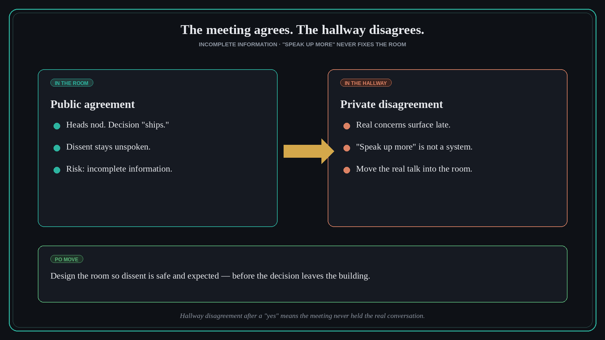

The meeting agrees, the hallway disagrees — and the decision ships incomplete
Source: Scrum.org (@Scrumdotorg), via PST Steven Deneir
original post · blog
What it claims
When the room nods yes and the real objections only appear in the hallway, the team ships on incomplete information. Exhorting people to “speak up more” does not fix that pattern — it is a symptom of how the conversation is designed. The durable move is to change the conditions so the real conversation happens in the room, before the decision leaves.
Why it matters for a PO
Sprint Reviews, backlog refinements, and go/no-go calls fail the same way: polite consensus, then private dissent that rewrites the plan. A PO who only tracks the formal “agree” misses the hallway veto. Your craft is surfacing disagreement early enough that the decision is informed.
3 takeaways
- Hallway disagreement after a public yes is a process failure, not a courage deficit.
- “Speak up more” is not a system — redesign the room (safety, facilitation, how you ask) instead of blaming quiet people.
- Treat the real conversation as an input to the decision, not a postmortem in the corridor.
Practice this week
In your next decision meeting, reserve five minutes for structured dissent: “What would make this a bad call?” Capture hallway concerns into the record before you close.